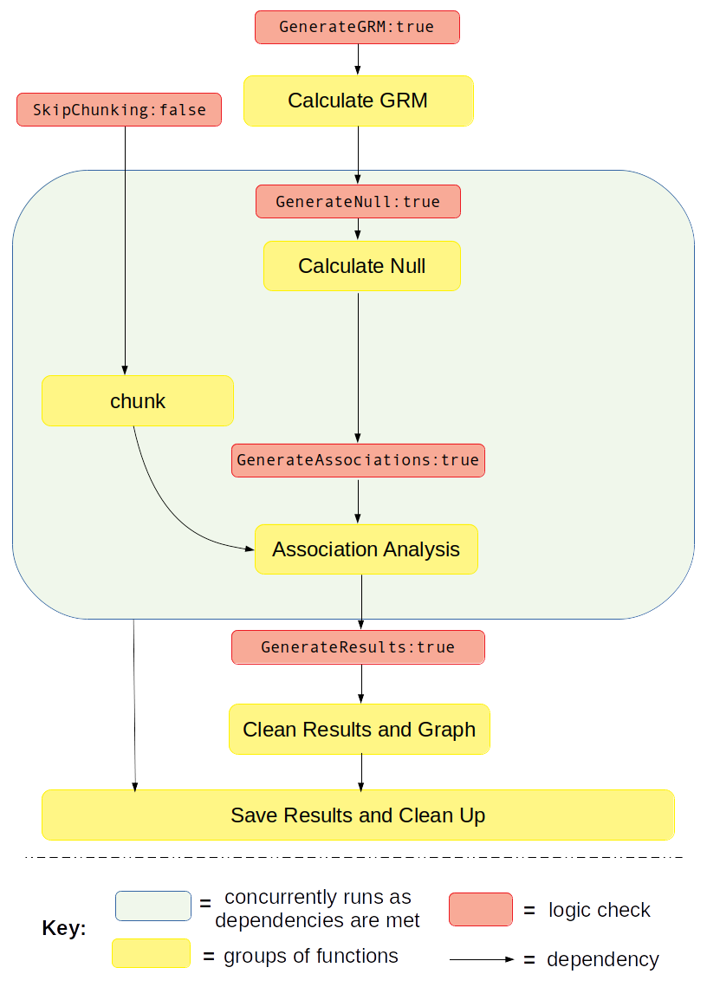

Example Work Flows¶
Quick Start Command¶
In order to run the pipeline, open a shell or bash prompt (or batch script for a job-scheduler) and type:
$ ./CCPM_GWAS_pipeline myConfigFile.txt
Example: Full Pipeline with Binary Trait¶
This example will walk you through how to run the full pipeline when the phenotype for association analysis if for a binary trait. It will guide you through how to properly set the logic, remind you to set the environment, list all the additional files you need, and finally which user parameters need to be set.
Section: Full Pipeline Logic and Overview¶
Full pipline means you want to run every component of the pipeline from beginning to end in one go, without re-using any previously calculated data from the pipeline. This is analagous to setting the pipeline logic kewords to the following:
GenerateGRM:true
GenerateNull:true
GenerateAssociations:true
GenerateResults:true
SkipChunking:false
If the pipeline is set to the above logic, the following workflow will be executed:
{kind=link}
Section: Full Pipeline with Binary Trait Step-by-Step Tutorial¶
STEP 1: Set the logic¶
As stated about above, open your config file (.txt) and make sure the logic is set to the following:
GenerateGRM:true
GenerateNull:true
GenerateAssociations:true
GenerateResults:true
SkipChunking:false
STEP 2: Set the environment¶
Open your config file (.txt) and make sure you set the path to where the bind point, temp bind point, and container image are located. I suggest you set the BindPoint keyword to the same path as where the container is located to avoid any confusion. If you have a tmp directory you want to use as scratch space, set that path as well. If this doesn't exist or you choose not to use it, set the keyword BindPointTemp to be the same as the path listed in the keyword BindPoint.
BindPoint:/path/to/bind/container
BindPointTemp:/path/to/tmp/
Container:/path/to/SAIGE_v0.39_CCPM_biobank_singularity_recipe_file_11162020.simg
STEP 3: Ensure you have all the files required¶
For running the full pipeline, including chunking the imputation files, you will need access to the following files:
- LD-pruned plink file
used for when logic parameters
GenerateGRMis set to true and/orGenerateNullis set to true.fulfills parameter
Plinksee Parameter: Plink for formatting
- phenotype and covariates file
used for when logic parameter
GenerateNullis set to truefulfills parameter
PhenoFilesee Parameter: PhenoFile for formatting
- chromosome lengths file
used for when logic parameter,
SkipChunkingis set to true.fulfills parameter
ChromosomeLengthFilesee Parameter: ChromosomeLengthFile for formatting
- imputation files properly named and formatted or genotype files formatted in same way as imputation files
used for when logic paramters
SkipChunkingis set to true and/orGenerateAssociationsis set to true.fulfills parameter
ImputeSuffixsee Parameter: ImputeSuffix for formatting
- Snp information file
use for when logic parameter
GenerateResultsis set to truefulfills parameter :code: InfoFile
see Parameter: InfoFile for formatting
See also
For a complete list of files and name formatting of keyword values listed in the config file see Formatting the Required Files.
STEP 4: Set the path to all the required input parameters¶
Now that you have all the required files, it is time to set the values and locations within your config file using the keywords expected. Here are the required keywords and how to specify them:
STEP 5: Running the pipeline¶
STEP 6: Generated Output¶
Example: GRM only¶
Section: GRM only Logic and Overview¶
GRM only means you want to run the GRM step. This is analagous to setting the pipeline logic kewords to the following:
Note, SkipChunking can be set to either true or false because it is only used if GenerateAssociation is set to true.
GenerateGRM:true
GenerateNull:false
GenerateAssociations:false
GenerateResults:false
SkipChunking:false
Example: Null Model only¶
Section: Null Model Only Logic¶
Null Model only means you want to run the Null Model only. It makes an assumption that you already have the GRM pre-calculated and want to re-use it in this step by setting the keywords SparseGRM and SampleIDFile located in the config file. These two files are the result of running GenerateGRM:true.
Choosing to run just the null model generation step is analagous to setting the pipeline logic kewords to the following:
GenerateGRM:false
GenerateNull:true
GenerateAssociations:false
GenerateResults:false
SkipChunking:false
SkipChunking can be set to either true or false because it is only used if GenerateAssociation is set to true.
Example: Association Analysis Only¶
Section: Association Analysis Only Logic¶
Association Analysis only means you only want to run the association anlysis. It makes an assumption that you already have the null model file (.rda) pre-calculated and have a pre-calculate variance ratio file (.varianceRatio.txt) and want to re-use/use it in this step by setting the keywords NullModelFile and VarianceRatioFile located in the config file. These two files are the result of running GenerateNull:true.
Choosing to run just the association analysis step is analagous to setting the pipeline logic kewords to the following:
GenerateGRM:false
GenerateNull:false
GenerateAssociations:true
GenerateResults:false
When GenerateAssociations:true, the SkipChunking logic comes into play.
Note
This step produces the raw associaions results concatenated into a file. It does not clean up the data, perform the proper flips, or generate graphs/figures. If you want the raw data in addition to the previously mentioned actions, be sure to also set GenerateResults:true.
Example: Results and Graphs Only¶
Section: Results and Graphs Only Logic¶
Results and Graphs Only cleans up raw data that was previously generated from an association analysis and generates cleaned data in addition to some figures/graphs. You can use any association analysis here as long as it meets the file formatting specifications for supplying results in AssociationFile.